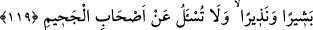

EN BÜYÜK ZULÜM
114. Allah’ın mescidlerinde O’nun adının anılmasına engel olan ve onların harab
olmasına çalışandan daha zâlim kim vardır! Aslında bunların oralara ancak
korkarak girmeleri gerekir. (Başka türlü girmeye hakları yoktur.) Bunlar için
dünyâda rezîllik, âhırette de büyük azâb vardır.
115. Doğu da Allah’ındır batı da. Nereye dönerseniz Allah’ın yüzü (zâtı) oradadır.
Şüphesiz Allah’(ın rahmeti ve nimeti) geniştir, O her şeyi bilendir.
116. “Allah çocuk edindi” dediler. Hâşâ! O, bundan münezzehtir. Oysa göklerde
ve yerde olanların hepsi O’nundur, hepsi O’na boyun eğmiştir.
117. (O) göklerin ve yerin eşsiz yaratıcısıdır. Bir şeyi dilediğinde ona sadece
“Ol!” der, o da hemen oluverir.
118. Bilmeyenler dediler ki: Allah bizimle konuşmalı ya da bize bir âyet (mûcize)
gelmeli değil miydi? Onlardan öncekiler de işte tıpkı onların dediklerini demişlerdi.
Kalbleri (akılları) nasıl da birbirine benzedi? Gerçekleri iyice bilmek isteyenlere
âyetleri apaçık gösterdik.
119. Doğrusu biz seni Hak (Kur’ân) ile müjdeleyici ve uyarıcı olarak gönderdik.
Sen cehennemliklerden sorumlu değilsin.
Hıristiyan meliki Rum Tativus ve ashâbı, İsrâîloğulları’yla savaştılar. Askerleri
öldürdüler, geri kalanlarını esir aldılar. Tevrât’ı yaktılar. Beyt-i Makdis’i de yıktılar.
Oraya pislik attılar ve orada domuz kestiler. Beyt-i Makdis’in bu harab hâli, Hz. Ömer
dönemine kadar devam etti. Hz. Ömer, Kisrâ ülkesini fethedip mallarını ele